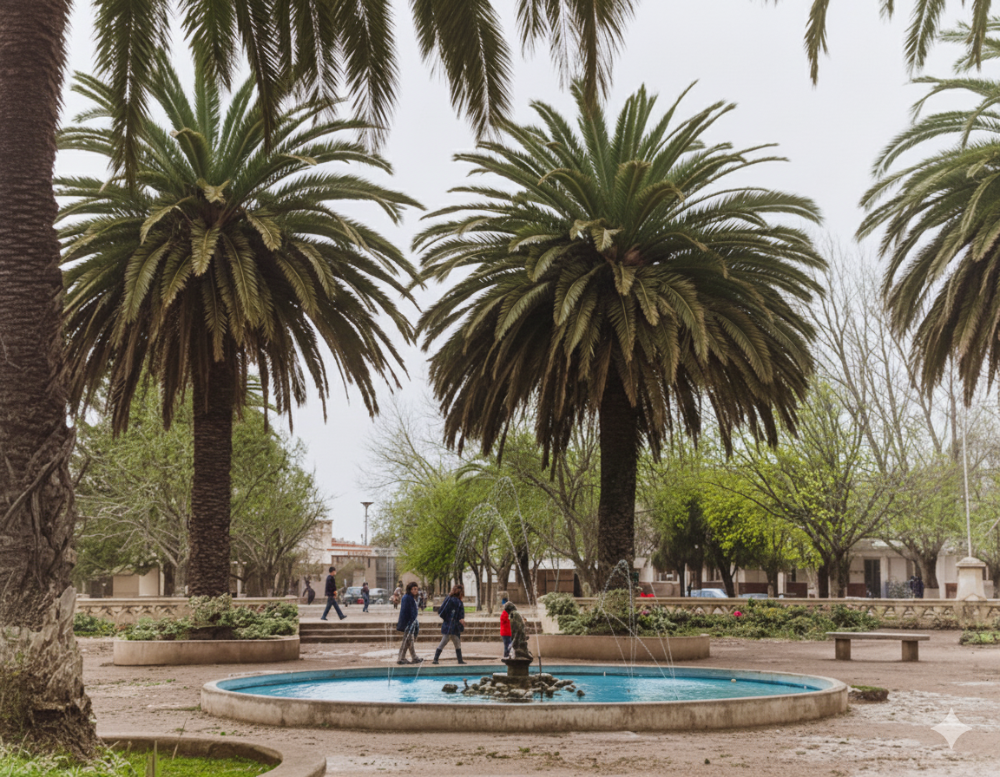
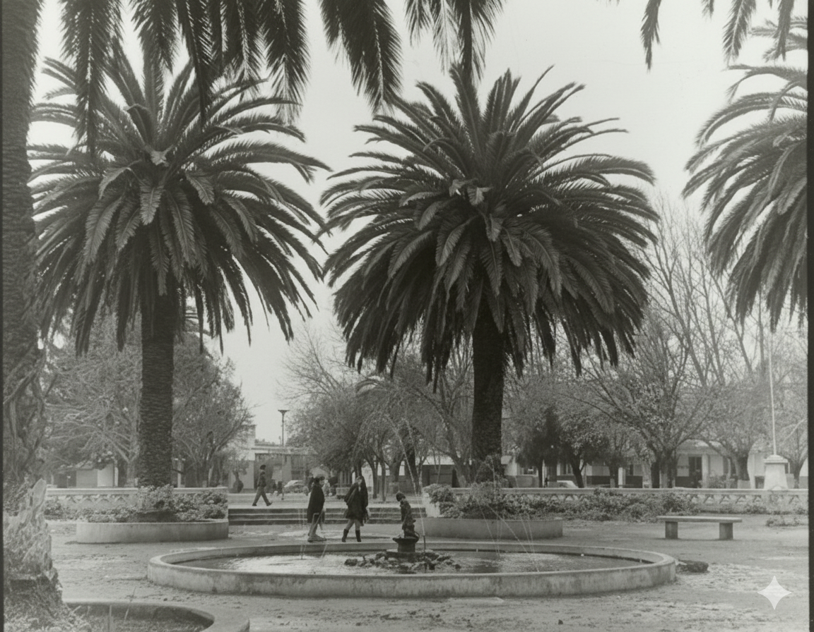

Archivo Original

Plaza de Armas Original
Fotografía histórica en blanco y negro.
Colorización IA

Plaza de Armas Colorizada
Versión restaurada con color.
Interpretación IA

Plaza de Armas Restaurada
Imagen completamente restaurada.
Video próximamente
Video de la Colección
Experiencia audiovisual.
Comparación Antes y Después
Después
Antes